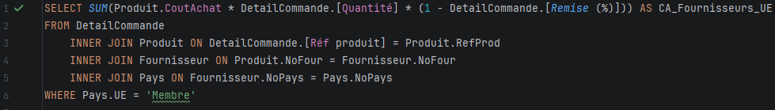
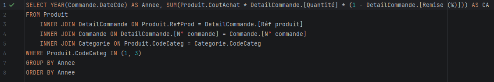
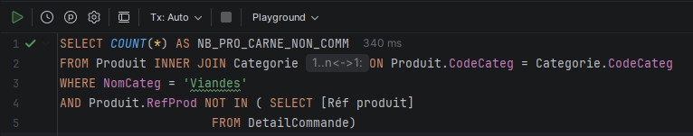
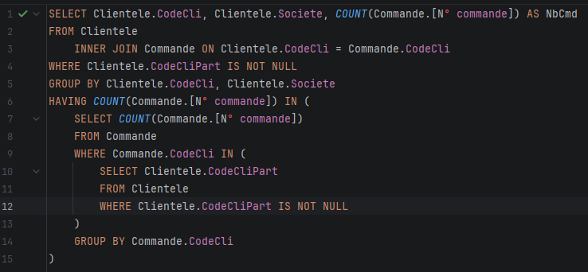

QUESTION 2 : Dans une réflexion en lien avec l’origine de ses produits : On veut comme indicateur le CA total généré à ce jour avec les fournisseurs de l’UE ?
Nous avons choisi de faire la somme du chiffre d'affaires réalisé sur chaque commande provenant de l'UE, parmi toutes les commandes, grâce à plusieurs jointures, entre 'DetailCommande', 'Produit', 'Fournisseur' et 'Pays'.
Grâce à cette requête on peut voir que KDou a réalisé un CA de 1 340 579€ sur les produits provenant de l'UE.
Remarque méthodologique : Ce montant correspond à la valorisation des ventes calculée à partir du coût d'achat fournisseur (CoutAchat) déduit des remises. Pour obtenir le chiffre d'affaires facturé au prix de vente client final, il suffit d'y intégrer une jointure avec la table 'Categorie' afin de multiplier ce montant par le coefficient de marge (CoefMarge).

Requête SQL de la question 2 (CA total UE)Résultat de la question 2
Afin de vérifier nos propos, nous avons testé une requête presque identique, mais avec un GROUP BY pour visualiser le CA réalisé en fonction des pays d'origine des produits.
Requête SQL de vérification par pays de l'UE (avec GROUP BY)Détail du CA par pays membre de l'UE
QUESTION 3 : Dans une réflexion en lien avec la santé : On veut comme indicateur le chiffre d’affaire généré (montant total des ventes) annuel pour les catégories desserts ou boissons.
Pour ce faire on a récupéré l'année de chaque commande, puis calculé le CA total, à l'image de la question précédente, sauf que les jointures ici sont différentes car nous ne cherchons pas la même chose. Afin d'afficher le résultat en fonction de chaque année, on a regroupé chaque année ensemble, de sorte à avoir le CA de 2020, 2021 et 2022.
Grâce à cette requête on peut voir que KDou a généré un CA de 79838€ en 2020, 672808€ en 2021, et 770€ en 2022, le tout dans les catégories desserts et boissons.

Requête SQL de la question 3 (CA annuel Boissons et Desserts)Résultat du CA annuel cumulé
Afin de vérifier nos propos, nous avons testé une requête presque identique, mais avec un autre GROUP BY pour visualiser le CA réalisé en fonction des années mais également en fonction des catégories de produits.
Requête SQL détaillée par année et par catégorieRésultat détaillé par année et par catégorie
QUESTION 4 : Dans une réflexion en lien avec l’offre commerciale : Calcul de l’indicateur nombre de produits carnés non commandés actuellement ?
Pour cette requête-ci nous avons compté le nombre de produits catégorisés comme contenant de la viande, puis nous avons inclus la condition comme quoi les produits qu'on souhaitait afficher ne soient pas présents dans la table 'DetailCommande', autrement dit, qu'ils n'aient jamais été commandés.
Grâce à notre requête on observe que seulement deux produits carnés différents n'ont jamais été commandés.

Requête SQL comptant les produits carnés non commandésNombre de produits carnés jamais commandés
Afin de vérifier nos propos, nous avons testé une requête presque identique, mais pour visualiser le nom de chaque produit carné jamais commandé.
Requête SQL listant le détail des produits carnés non commandésListe des deux produits carnés non commandés
QUESTION 5 : Dans une réflexion sur le partenariat client : A-t-on des clients pilotes d’un réseau partenaire ayant autant de commandes que les clients partenaires ?
Pour répondre à cette ultime question, nous avons regardé parmi tous les clients pilotes qui avaient un client partenaire, par la suite, nous avons vérifié si le nombre de commandes des clients pilotes était compris dans la liste des nombres de commandes réalisées par les clients partenaires.
Ici, seulement un seul client pilote a le même nombre de commandes que son client partenaire associé, il s'agit du client ISAEP, avec un total de 17 commandes, qui tient la société 'Petite Épicerie'.

Requête SQL comparant le nombre de commandes Pilote / PartenaireRésultat de la question 5 (17 commandes)